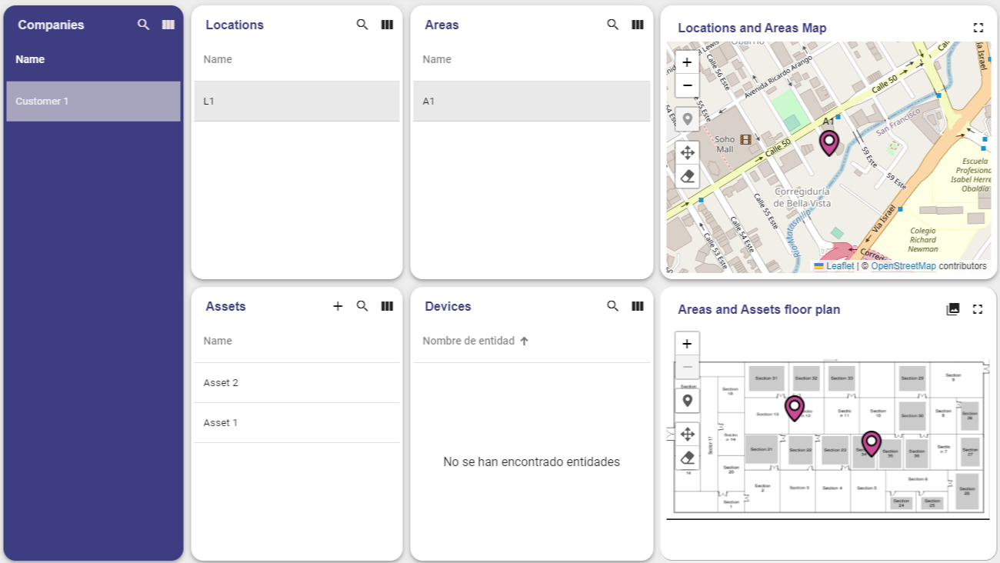
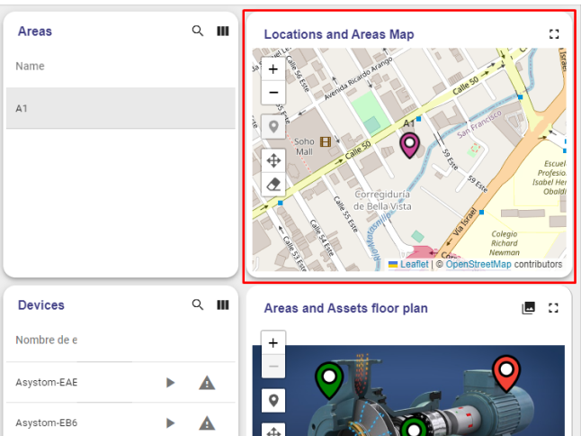
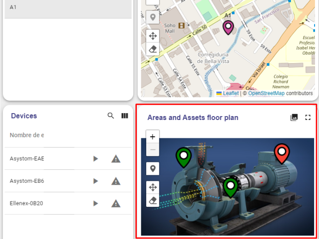
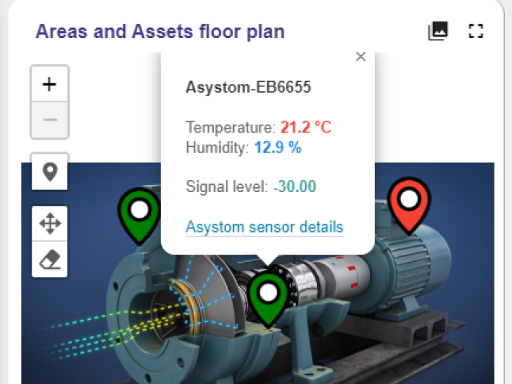
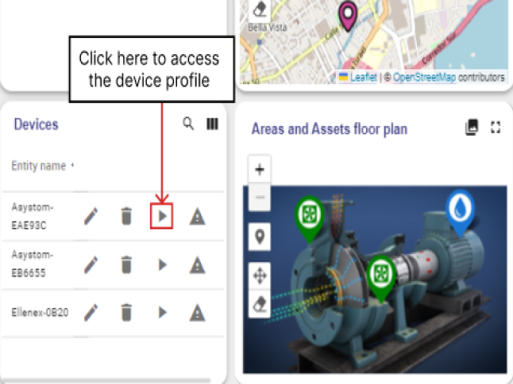
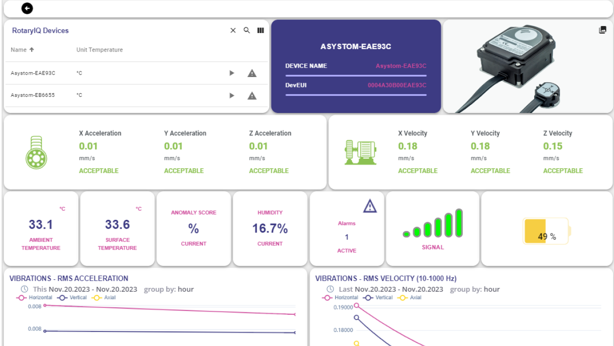
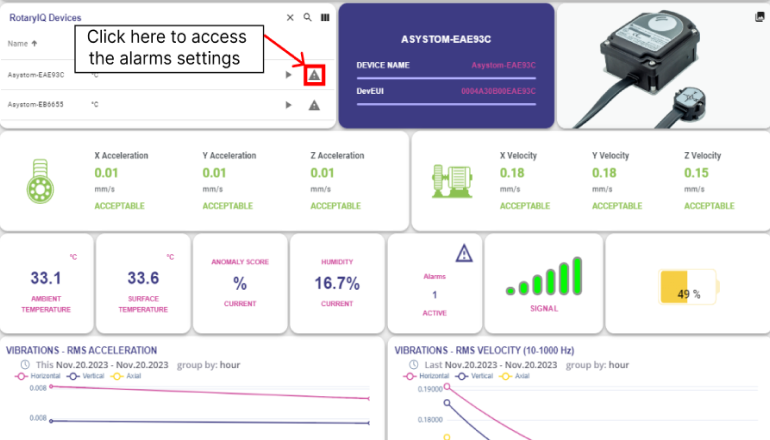

This tutorial’s goal is to demonstrate the basic usage of the most
popular IOTLogIQ’s Customer Dashboard features.

1-Map Panel

Located on the top right corner of the dashboard, this panel will
allow you to create, edit, or drag and drop markers (if
permissions enable it).
2- Area and Assets floor plan Panel
Located on the bottom right corner of the dashboard, When an
asset, area, or device is selected, this panel will render the
map/image attached to it along with its respective markers.


-Markers in this section can be edited or removed.
-Additional Markers can be added.
-Images attached can be changed.
3- Device Panel
You can access all information about the devices by clicking on
the details button on the Device section.

Depending on the device profile, you will be redirected to a
different dashboard with different specifications and graphics
about its measurements.

You can access the alarms for the devices by clicking on the
alarm button on the top-left section.

Upon redirection, you will access the device's alarm dashboard,
allowing you to configure various settings to determine when
different alarms will be triggered.